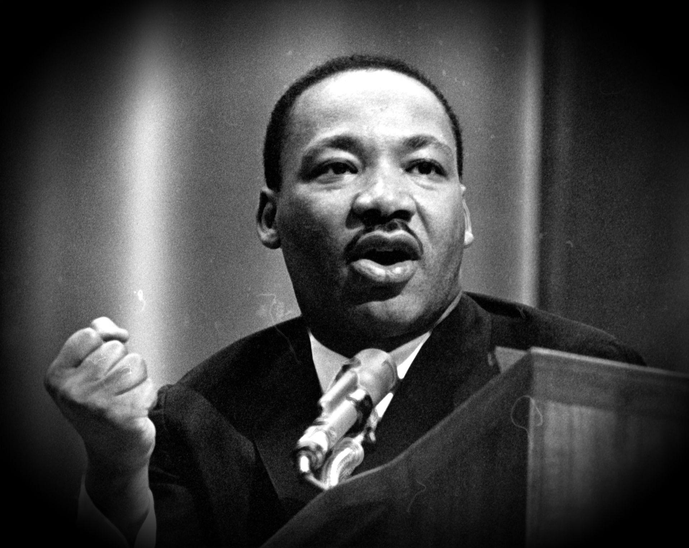

Martin Luther King Jr. faced numerous hardships throughout his life as an activist for civil rights. He endured arrest, physical violence, and threats to his safety and that of his family. Despite these challenges, he remained committed to the principles of nonviolent resistance and continued to speak out against racism and injustice. In his famous "Letter from Birmingham Jail," he wrote, "Injustice anywhere is a threat to justice everywhere." King's perseverance and determination to fight for equal rights inspired countless others to join the Civil Rights Movement and helped to bring about significant change in American society. Tragically, King was assassinated in 1968, but his legacy lives on as a symbol of hope and courage in the ongoing struggle for justice and equality.